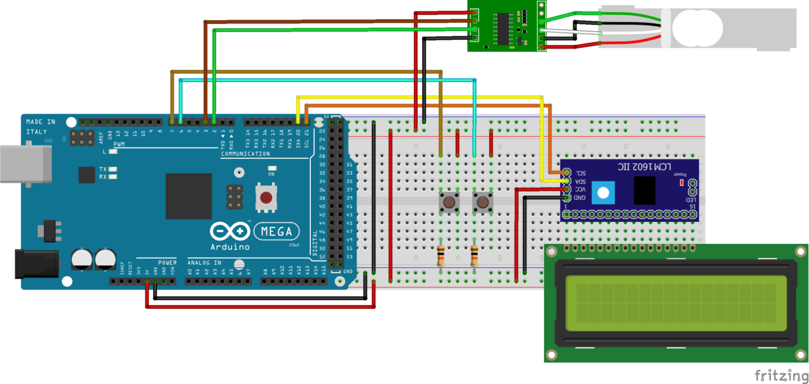
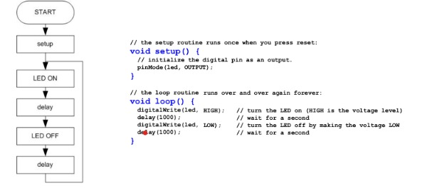
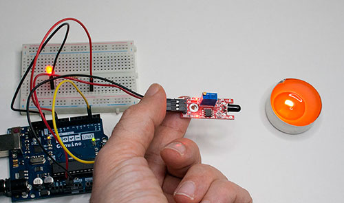
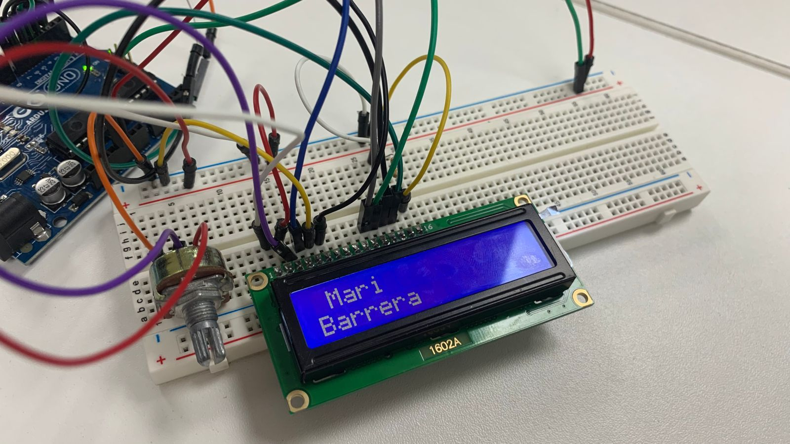
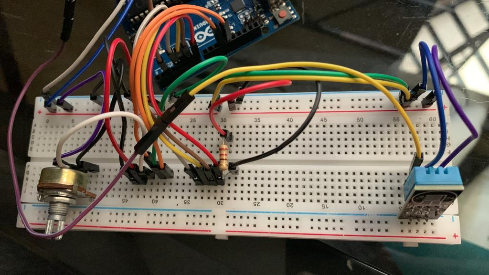

En esta clase vimos los conceptos y conocimientos básicos a cerca de programación web HTML y CSS. Tambien revisamos que materiales y de qué tratará nuestro proyecto final.
Cuando hablamos de HTML nos referimos a un lenguaje marcado de hipertexto, compuesto por etiquetas que se emplean para crear la estructura de una página web.
Cuando nos referimos a CSS es todo lo que tiene que ver con la tecnología que se usa para darle estilo a una página construida por HTML. Ambos no se consideran como lenguaje de programación.

En esta sesión vivmos los elementos y estructura de un HTML.
Como por ejemplo: Etiqueta, Atributo, Valor, Contenido, Etiqueta fin.

Algunos ejemplos fueron: sup, hr, em, blockquote, dd, dt, ul, li.
También vimos a cerca de la resolución de imágenes (72ppi) para poder subir a nuestra web y también como agregar un video MP4 y como configurar los controles.

Cada elemento de un Html genera una caja de CSS.
Vimos la estructura de una regla y que cada regla siempre tiene un selector.
La declaración es lo que se le va a aplicar al contenido o selector del elementos.
Siempre va siempre entre ¨{} al final de cada delclaracion va un punto y coma (;).


En esta sesión vimos a cerca de las fuentes que podemos usar para el diseño de nuestra Web.
Tambien vimos sobre la espeficación de colores que pueden ser realizadas en 3 formatos.
1. Valores RGB
2. Códigos HEX
3. Nombres de Color
Otro punto fue el Text-Transform que es el que determina si el elemento será escrito en mayúsculas o minúsculas.

¿Qué es Hosting?
Es un nombre asociado a una dirección IP que determina la dirección de un sitio Web
COMPONENTES
Webhost, Dirección y Home page
¿Qué es un Hosting?
Es el espacio físico donde de almacena un sitio web, puede ser una computadora o un servidor contratado.
Ejemplos de Hosting:
WebEmpresa
Bluehost
HostGator
Revisamos lo que son las extensiones de dominio que son:
.com (comercial)
.gov (Gubernamental)
.edu (educacional)
.org (Organización)

La idea detrás de Arduino era crear un sistema fácil de usar y accesible para que
los no expertos en electrónica pudieran crear proyectos interactivos y prototipos de manera sencilla.
El software de Arduino se basa en un lenguaje de programación similar a C++, que es fácil de aprender y utilizar.
En cuanto a la RAM, la VRAM y la ROM, estas son tipos de memoria en los sistemas informáticos.
RAM
La RAM (Random Access Memory) es una memoria temporal que se utiliza para almacenar datos y programas que están siendo utilizados
en el momento presente.
VRAM
La VRAM (Video Random Access Memory) es una memoria especializada que se utiliza en las tarjetas gráficas para almacenar imágenes
y otros datos relacionados con la visualización de gráficos y video en la pantalla del ordenador.
ROM
La ROM (Read Only Memory) es una memoria de solo lectura que se utiliza para almacenar datos y programas que no necesitan ser
modificados o borrados.

Teniamos la misión de realizar la investigación de 3 proyectos con Arduino que ya han sido elaborados
y que tenían que contener Sensores y Actuadores.
En mi caso realicé los 3 proyectos que fueron:
1. Báscula Inteligente
2. Controladora Midi
3. Jrdinera Avanzada
Despues de realizar las 3 investigaciones se procediá con la elección de un proyecto para si exposición.
En mi caso elegí la Báscula inteligente
Una báscula inteligente es un dispositivo que utiliza tecnología digital y conectividad inalámbrica
para medir el peso de los objetos y transmitir los datos de medición a una aplicación o servicio en línea para su monitoreo o registro.

Vimos en clase sobre los número binarios y la manera de interpretarlos,
los cuales son un sistema de numeración que emplean
los dígitos 0 y 1 para representar valores numéricos. Este sistema es utilizado en la informática
para codificar información en formato digital, debido a que cada bit puede asumir solo dos valores.

Vimos en clase lo que era el Void LOOP que es una estructura de programación que permite larepetición
sin pausas ni interrupción. Es una forma eficiente y conveniente de automatizar tareas repetitivas en un programa.
Switch case que es lenguaje de programación es un tipo de mecanismo de control de selección para una acción a realizar.

Vimos en clase como hacer una conexión con leds pragramados en Arduino. Hicimos la definición del valor
para los leds. Pusimos a prueba lo del void setup que son las declaraciones y
el void loop que serian las repeticiones continuas
Tambien programamos el delay para el tiempo de demora del encendido de estos.

Un diagrama de flujo es una representación gráfica de un proceso o algoritmo que utiliza símbolos estándar
y flechas para mostrar la secuencia de pasos necesarios para completar una tarea.
Inicio/fin: representa el inicio o final del proceso.
Acción: representa una tarea o acción que se realiza.
Decisión: representa una bifurcación en el proceso, donde se toma una decisión en función de una condición.
Entrada/salida: representa la entrada o salida de datos en el proceso.
Switch case que es lenguaje de programación es un tipo de mecanismo de control de selección para una acción a realizar.

Vimos sobre componentes electrónicos activos y pasivos
Lo componentes Activos son los que suministran energía o aun circuito y por tanto tienen la capacidad de controlar electricamente el flujo de carga.
Lo componentes Pasivos son los que únicamente pueden recibir energía, pueden disparar, absorver o almacenar en un campo eléctrico.

Los sensores son dispositivos que permiten a la placa Arduino interactuar con el entorno físico, estos pueden detectar
variables como luz, temperatura, humedad, movimiento , sonido, distancia, entre otras.
Tambien a cerca de las fuentes AC y DC
Fuente AC: Estas fuentes proporcionan una corriente que varía en polaridad y amplitud de los hogares.
Fuente DC: Estas proporcionan una corriente constante en una sola dirección.

Durante esta sesión, recibimos indicaciones respecto a los componentes de Arduino
requeridos para nuestro proyecto; esto nos ayudo para tener una visión más clara para
avanzar con nuestro termometro digital.
Hicimos tambien la conexión del sensor de temperatura y humedad, lo programamos para
que se encienda cuando la temperatura sea de 28°.
Por otro lado, tambien hicimos una programación en arduino donde aparecián los nombres
de cada una de las integrantes del grupo.

Los diagramas de flujo son las representaciones gráficas que ilustran el flujo de un proceso
estos son utiles para diseñar y planificar programas complejos antes de escribir el código.
Una vez que se ha creado el diagrama de flujo de Arduino, se puede utilizar como una guía
visual para escribir el código en el IDE de Arduino.

El proyecto que lleve a cabo con mi grupo es el del termómetro digital , que se usa para medir
la temperatura y humedad. En clase hicimos la presentación de nuestro circuito el cual estaba completo y funcionaba correctamente.
Realizamos la presentación final del proyecto, en esta exposición tuvimos que presentar sobre
que trataba nuestro proyectos, el funcionamiento, la codificacion del codigo, el diagrama
de flujo y el circuito y las conexiones realizadas.
Se refiere a las conexiones de dispositivos que estan equipados con sensores, actuadores y
tecnologia que permite conectarse a internet y comunicarse entre sí. La idea detrás de IoT
es permitir que los objetos físicos sean "inteligentes" al estar conectados a Internet
Tipos de Iot:
IoT para consumo,
IoT comercial,
IoT militar.

Tocamos el tema sobre los Maker Spaces que son espacios claves para potenciar el desarrollo de
una comunidad que sirve para impulsar proyectos
Tambien vimos sobre la realidad virtual que es una tecnología que le permite a los usuarios entrar
en un entorno real simulado generado por computadora.

En clase presentamos nuestro modelo 3D y tuvimos que adaptar el tamaño.
Tambien realizamos el escaner de un objeto en 3D mediante una app en donde para que el objeto
tome forma debiamos tomar fotos desde todos los angulos del objeto.

La inteligencia artificial ha tenido una evolución siginificativa y un impacto profundo en
diversas área de la sociedad. Por otro lado ha ido evolucionando en el ámbito de la robótica
donde los robots están adoptando capacidades de percepción y toma de decisiones más avanzadas.